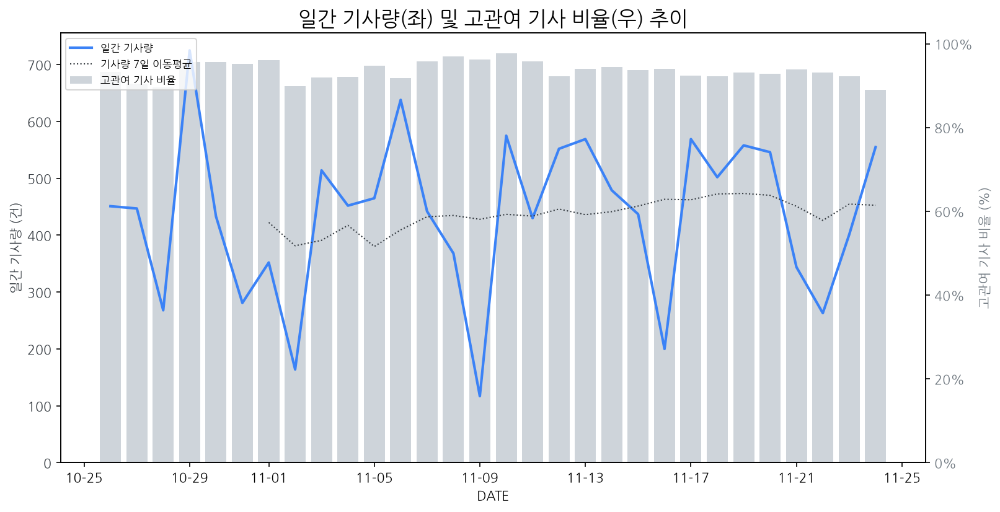

1
시장 활동 지표
기사량 추세 & 이상 징후 탐지
시장의 '전체 기사량'이 평소보다 비정상적으로 급증했는지(Spike)를 차트로 확인하고, LLM이 분석한 급등의 핵심 원인을 파악할 수 있음

고관여 기사란? 산업 연관 키워드로 수집된 기사들 중 디스플레이 키워드에 가중치를 반영하여 도출된 관련성 높은 기사
수집된 기사 수 (2026-11-24)
555
-2% WoW
기사량 변동 수준 (7일 이동평균 대비)
±6.7% 이하
2
오늘의 키워드
급격한 관심 ↑, 주목해야 할 키워드
1
삼성디스플레이
+7.9σ
삼성디스플레이의 2027년 임원 인사 발표로 QD-OLED 및 8.6세대 OLED 기술 혁신 가속화 전망
Related Metrics
금일 언급량: 44, 전일 대비: +44
Interpretation
OLED 기술 리더십 강화
Next Step
핵심 토픽 'OLED_Topic' 관련 신호입니다. 3번 섹션(키워드 감성분석)에서 해당 토픽의 감성 변동을 교차 확인하세요.
2
hp
+5.9σ
HP의 AI PC 신제품 출시 및 관련 부품 수급 기대감 상승이 주가 급등을 견인했습니다.
Related Metrics
금일 언급량: 20, 전일 대비: +20
Interpretation
AI PC 수요 증가는 디스플레이 업계 호재
Next Step
'hp' 관련 상세 기사 및 경쟁사 반응 모니터링
3
oled
+2.8σ
LG디스플레이와 삼성디스플레이의 OLED 기술 투자 및 마케팅 강화 소식이 주요 원인입니다.
Related Metrics
금일 언급량: 36, 전일 대비: +23
Interpretation
OLED 시장 경쟁 심화
Next Step
핵심 토픽 'OLED_Topic' 관련 신호입니다. 3번 섹션(키워드 감성분석)에서 해당 토픽의 감성 변동을 교차 확인하세요.
4
폴더블
+2.8σ
차세대 폴더블폰 출시 및 생산 확대 소식이 관련 기업들의 주가를 견인했습니다.
Related Metrics
금일 언급량: 12, 전일 대비: +11
Interpretation
폴더블 시장 확대 기대
Next Step
'폴더블' 관련 상세 기사 및 경쟁사 반응 모니터링
3
실시간 Risk 키워드
경계해야 할 시그널 탐지
특정 토픽의 부정 감성 점수가 급등할 때 이를 즉시 탐지하고, "근거 기사" 링크를 통해 리스크의 실체를 빠르게 파악할 수 있음
키워드 분석 결과, 오늘은 걱정할 만한 하락 신호가 없습니다. (부정 언급량 변화: +1.5σ 이내)
4
주요 이벤트 모니터링
실시간 산업 동향 파악을 위한 주요 활동
최근 발생한 주요 기업들의 신제품 출시, 투자 등 주요 이벤트를 제공하여 매일 경쟁사 동향을 확인할 수 있음
디스플레이 평가 전문 매체 알팅스가 1500달러 미만의 TV 4종을 평가한 결과, LG C6 모델이 최상위 평가를 받았습니다. 나머지 3종의 TV에 대한 구체적인 평가 결과는 추가 분석이 필요합니다.
Impact
LG C6의 최상위 평가는 해당 가격대 TV 시장에서 LG 디스플레이 기술의 우위를 재확인시키며, 경쟁사 제품의 시장 점유율 확대에 대한 견제 요인이 될 수 있습니다.
Next Step
경쟁사들은 LG C6의 평가 항목 및 강점을 분석하여 자사 제품의 차별화 포인트 개발 또는 기술 경쟁력 강화 방안을 모색해야 합니다.
2026년 이집트 가전 시장은 성장 잠재력이 높으며, 특히 신흥 중산층의 소비력 증대가 주요 동인으로 분석됩니다. 정부의 가전산업 육성 정책 및 관련 투자 동향에 대한 정보가 공개되었습니다.
Impact
이집트 가전 시장의 성장 잠재력은 디스플레이 패널 수요 증가로 이어져, 해당 시장에 진출하거나 사업을 확대하려는 디스플레이 제조 기업에게 새로운 기회를 제공할 수 있습니다.
Next Step
이집트 시장에 특화된 디스플레이 제품 및 기술 개발, 현지 유통망 확보 전략 수립을 검토해야 합니다.
LG디스플레이는 12조 원에 달하는 부채 상황에도 불구하고, 삼성 및 중국 기업과의 경쟁에 대응하기 위해 3조 원을 투자하여 10.5세대 OLED 패널 생산 설비 구축을 결정했습니다. 이는 대형 OLED 시장에서의 기술 리더십을 강화하고 경쟁 우위를 확보하기 위한 전략입니다.
Impact
LG디스플레이의 10.5세대 OLED 투자 결정은 대형 OLED 시장의 생산 능력 확대 및 기술 발전 속도를 가속화시키며, 퀀텀닷(QD) 디스플레이 등 경쟁 기술과의 차별화 및 가격 경쟁 심화를 야기할 수 있습니다.
Next Step
경쟁사의 대형 OLED 투자에 대한 면밀한 모니터링과 함께, 차별화된 기술 개발 및 원가 경쟁력 확보를 위한 전략적 투자를 지속해야 합니다.
마이크로 LED 디스플레이의 상용화 기대감이 확산되면서, 관련 핵심 부품인 구동칩 및 검사장비 기업들이 수혜를 볼 것으로 전망됩니다. 이는 마이크로 LED 기술의 시장 진입 가능성이 높아지고 있음을 시사합니다.
Impact
마이크로 LED의 상용화는 기존 디스플레이 시장의 기술 패러다임을 변화시키고, 관련 소재 및 부품 시장에 새로운 성장 기회를 창출할 것입니다.
Next Step
마이크로 LED 기술 로드맵을 재점검하고, 핵심 부품 경쟁력 강화 및 차세대 디스플레이 기술 확보를 위한 투자를 검토해야 합니다.
엔비디아 CEO 젠슨 황의 복귀 소식이 알려지면서 로봇 관련 주식인 현대오토에버가 상한가를 기록했으며, 대성하이텍 또한 급등세를 보였습니다. 이는 인공지능 및 로봇 기술 발전에 대한 기대감이 반영된 결과로 해석됩니다.
Impact
로봇 및 자동화 기술 투자 확대는 향후 디스플레이 시장에서 첨단 제조 공정 자동화 및 스마트 팩토리 구축 수요 증가로 이어져, 관련 디스플레이 솔루션 채택이 늘어날 수 있습니다.
Next Step
디스플레이 제조 기업은 제조 공정 자동화 및 효율성 증대에 기여할 수 있는 고성능, 고신뢰성 산업용 디스플레이 솔루션 개발 및 공급 역량을 강화해야 합니다.